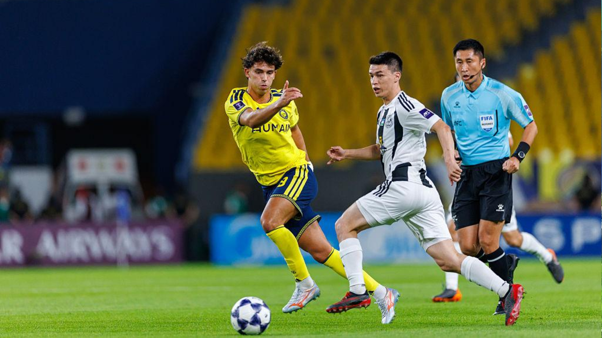
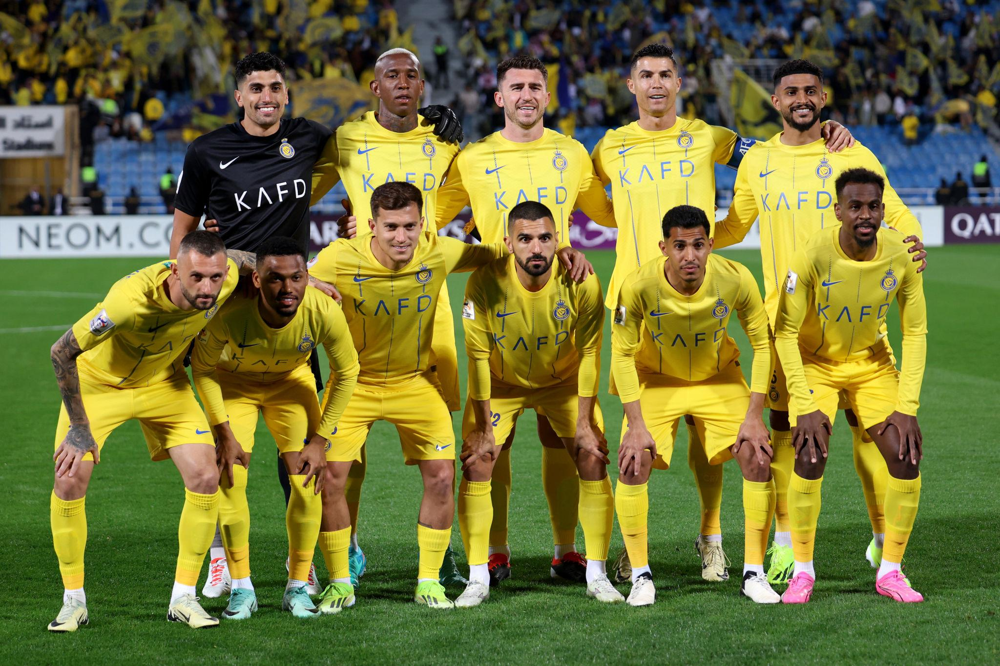
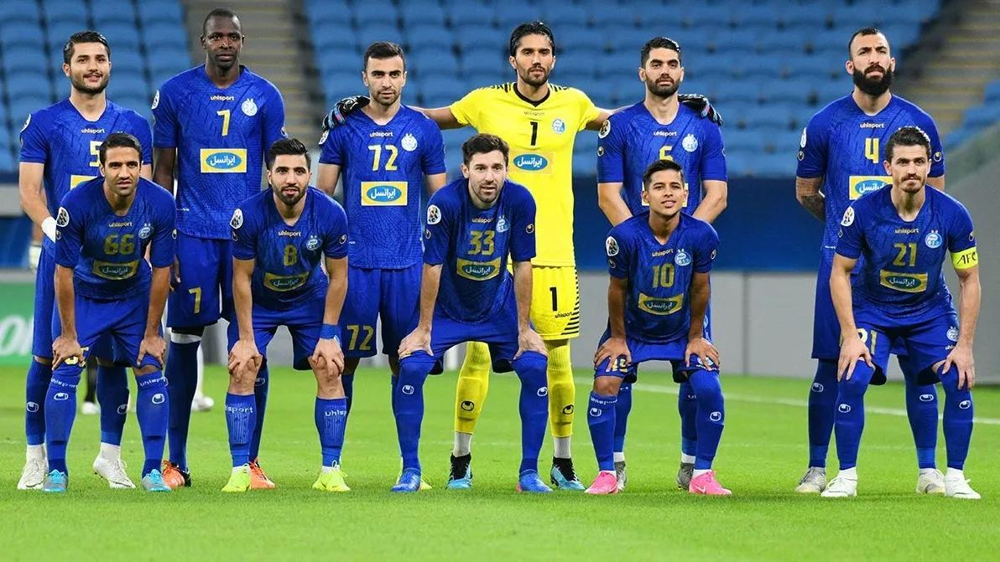
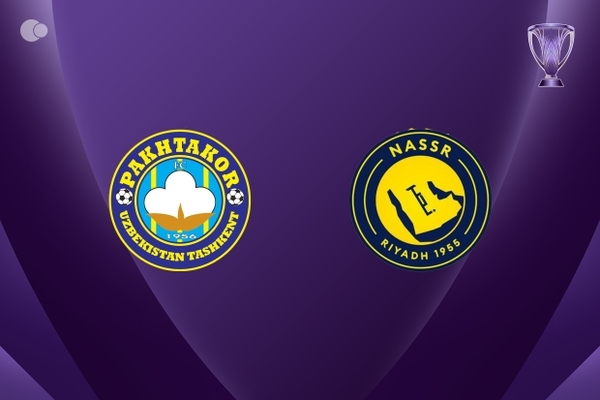

Pakhtakor host Al-Nassr in the AFC Champions League Elite West Region league phase.
Pakhtakor Tashkent host Saudi Arabian side Al-Nassr on Monday in an important AFC Champions League Elite league-phase fixture.
The match takes place at Pakhtakor Markaziy Stadium in Tashkent, Uzbekistan. Both clubs are looking for valuable points as they compete for a place in the next stage of the continental competition.
Al-Nassr arrive with strong domestic form, having won their previous five reported matches. However, their continental campaign has been less consistent, with one victory and one defeat from their first two league-phase matches.
Pakhtakor have collected two points from their first three matches and are still searching for their first win in the competition's league phase.
Pakhtakor
UzbekistanAl-Nassr
Saudi ArabiaPakhtakor vs Al-Nassr Match Information
| Match detail | Information |
|---|---|
| Date | November 2, 2026 |
| Kick-off | 13:45 UTC |
| Pakistan time | 6:45 PM PKT |
| Tashkent time | 6:45 PM UZT |
| Stadium | Pakhtakor Markaziy Stadium |
| City | Tashkent, Uzbekistan |
| Competition | AFC Champions League Elite |
| Stage | West Region, League Phase |
| Matchday | 4 |
The listed kick-off time is based on the published fixture schedule.
Is Cristiano Ronaldo Playing Against Pakhtakor?

Cristiano Ronaldo is the biggest talking point ahead of this fixture.
Reports published on November 2 say that Al-Nassr manager Ange Postecoglou has left Ronaldo out of the travelling squad for the trip to Uzbekistan.
The reported absences also include:
- Cristiano Ronaldo
- Kingsley Coman
- Mohamed Simakan
Ronaldo's absence comes shortly after he scored a hat-trick in Al-Nassr's 5–3 Saudi Pro League victory over Al-Kholood on October 29.
Confirmed Starting Lineups: Pakhtakor vs Al-Nassr
The published team sheet lists the following starting players. These are more useful than predicted lineups because the match lineup has been released.

The confirmed team sheets reflect the manager's selected starting XI for this AFC Champions League Elite Matchday 4 clash. Spellings and ordering follow the published team sheet — check the official club channels for any late changes.
Pakhtakor Tashkent
- Nazarov
- Karimov
- Tahseen
- Resen
- Nasrullaev
- Mozgovoy
- Buriev
- Sabirkhodjaev
- Flamarion
- Abdumazhidov
- Chinedu
Al-Nassr
- Bento
- Boushal
- Al-Amri
- Martínez
- Aman
- Samu Costa
- Ângelo Gabriel
- Yahya
- Al-Hamdan
- Sadio Mané
- João Félix
Al-Nassr Team News and Injury Updates

Al-Nassr have several important squad developments ahead of the match.
Players unavailable or absent:
- Cristiano Ronaldo: rested, according to matchday reporting.
- Kingsley Coman: reported injury absence.
- Mohamed Simakan: absent from the travelling squad.
Positive news: Samu Costa returns after serving a one-match suspension for accumulating yellow cards. His availability gives Postecoglou another option in midfield.
Pakhtakor Team News
Pakhtakor are looking to use their home advantage against one of the most recognised clubs in Saudi Arabian football.
The pre-match information reports that the Uzbek side had a fully fit squad, although defender Khozhiabar Alizhonov was previously mentioned as a doubt after being forced off during a domestic match.
The published starting lineup includes players such as Flamarion, Chinedu, Mozgovoy and Sabirkhodjaev.
How Are Pakhtakor Performing?
Pakhtakor have had a mixed start to their AFC Champions League Elite campaign.
Before this match, their league-phase record was:
| Statistic | Pakhtakor |
|---|---|
| Matches played | 3 |
| Wins | 0 |
| Draws | 2 |
| Losses | 1 |
| Points | 2 |
| West Region position | 12th |
Their continental results included:
- Draw against Al-Ahli: 1–1
- Draw against Al-Qadsiah: 1–1
- Defeat against Al-Quwa Al-Jawiya: 0–1
They also reached the league phase after defeating Al-Hussein 3–0 in the qualifying round.
How Are Al-Nassr Performing?
Al-Nassr have been in strong form in domestic competitions.
Their reported five-match winning run before the Pakhtakor fixture included:
| Opponent | Result |
|---|---|
| Al-Kholood | Won 5–3 |
| Al-Faisaly | Won 3–1 |
| Neom SC | Won 1–0 |
| Neftchi Fergana | Won 3–1 |
| Al-Diriyah | Won 3–0 |
However, their AFC Champions League Elite record was different:
| Statistic | Al-Nassr |
|---|---|
| Matches played | 2 |
| Wins | 1 |
| Draws | 0 |
| Losses | 1 |
| Points | 3 |
| West Region position | 9th |
Al-Nassr lost their opening continental fixture 4–0 against Al-Ain before recording a 3–1 victory over Neftchi Fergana.
AFC Champions League Elite West Region Standings Before the Match
The standings entering this fixture showed both teams outside the top eight.
| Position | Team | Played | Points |
|---|---|---|---|
| 9 | Al-Nassr | 2 | 3 |
| 12 | Pakhtakor | 3 | 2 |
Al-Nassr had one point more than Pakhtakor despite having played one fewer match. The league-phase format makes every point important, particularly for clubs trying to secure qualification for the knockout rounds.
Pakhtakor vs Al-Nassr Head-to-Head Record
The two clubs have a limited recorded history of previous meetings.
| Result category | Record |
|---|---|
| Pakhtakor wins | 0 |
| Draws | 1 |
| Al-Nassr wins | 1 |
| Previous meetings | 2 |
Their recorded 2011 meetings included a 2–2 draw in Tashkent and a 4–0 Al-Nassr victory in Riyadh. This historical sample is small, so it should not be treated as a complete picture of the teams' current strengths.
Where to Watch Pakhtakor vs Al-Nassr
The match listings identify the following broadcasters:
- beIN Sports 2
- Alkass Six
Availability can vary by country and subscription. Viewers should check their local broadcast listings before the match.
What Makes This Match Important?
There are several important storylines surrounding the fixture.
- Ronaldo's absence: The Portuguese superstar's omission is a major talking point for supporters and football news readers.
- Al-Nassr's continental campaign: The Saudi club needs points after losing its opening match and winning its second.
- Pakhtakor's home advantage: The Uzbek side has an opportunity to challenge a major Asian opponent in front of its home supporters.
- Qualification pressure: Both teams need consistent results to improve their West Region standings.
- Sadio Mané and João Félix: With Ronaldo absent, these attacking players will receive additional attention as part of Al-Nassr's starting lineup.